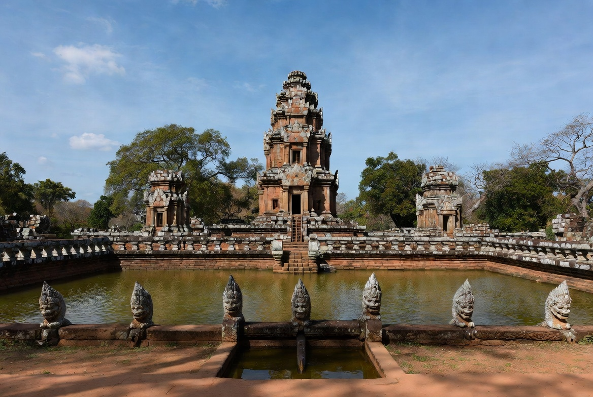
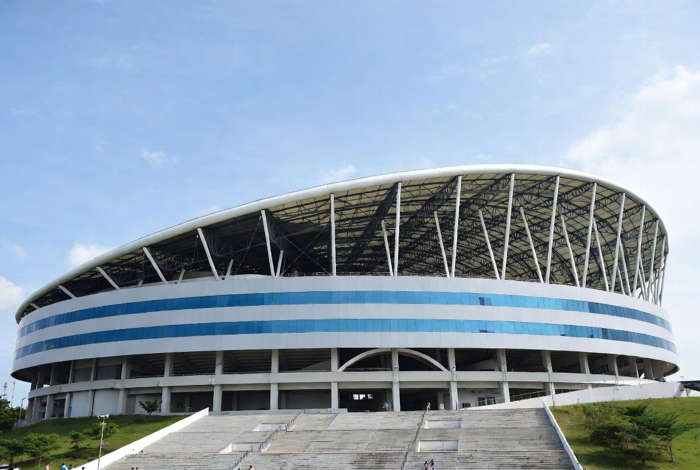
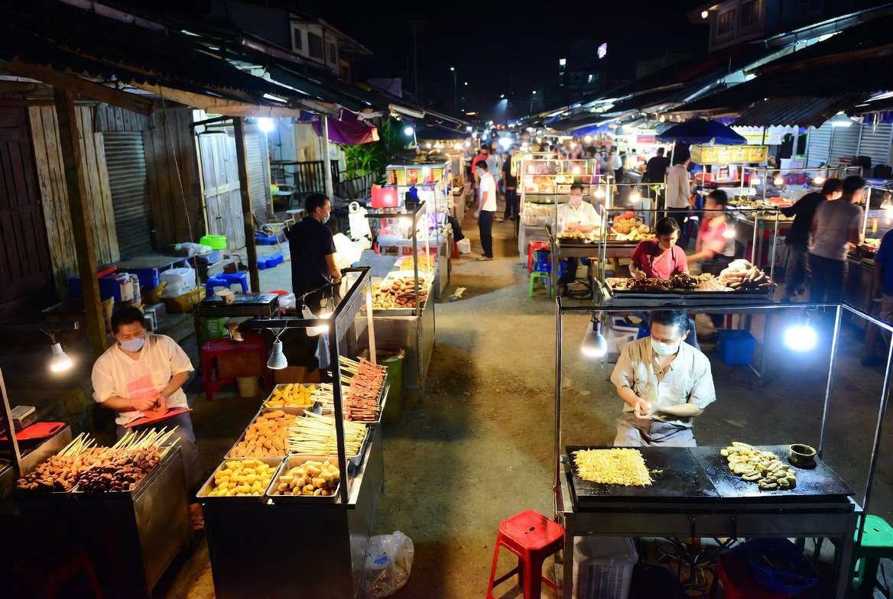

Buriram Travel Guide
Buriram is a surprising province in southern Isan. Most people come for one of two very different reasons: the outstanding Khmer temple of Phanom Rung, perched on an extinct volcano, or the big modern sports venues — Chang Arena (home of Buriram United) and the Chang International Circuit that hosts MotoGP. The city itself is quiet and functional, but the surrounding countryside holds some of the best-preserved Angkor-era ruins in Thailand. If you like history mixed with a bit of contemporary Thai passion for football and racing, Buriram is an easy and rewarding stop.
How to Get There
By plane
Buriram Airport (BFV) has regular flights from Bangkok’s Don Mueang with Thai AirAsia. Flight time is about one hour. This is by far the most convenient option if you are short on time.
By train
Several trains a day run from Bangkok (Krung Thep Aphiwat) to Buriram on the northeastern line. Journey time is roughly 5–7 hours. Overnight services are available.
By bus
Frequent air-conditioned buses leave from Bangkok’s Mo Chit Bus Terminal. Travel time is typically 5.5–7 hours depending on the service.
Once you arrive, the city centre is compact. For Phanom Rung and Muang Tam (about 50–60 km south) you will need a private car, taxi or organised tour — public transport is limited.

Climate & Best Time to Visit
Buriram follows the classic Isan pattern of three seasons.
Best time: November to February
Cool, dry and comfortable for exploring the temples and countryside. This is also when the light is best for photography at Phanom Rung. Book ahead if you are coming for a football match or race weekend.
Hot season: March and April
Temperatures rise sharply and days can feel punishing, especially if you are climbing the volcano to Phanom Rung.
Rainy season: May to October
Heavier rain, particularly in September. The landscape turns green and visitor numbers drop, but outdoor plans can be interrupted.

What You’ll Love Doing Here
The undisputed highlight is Phanom Rung Historical Park. Built between the 10th and 13th centuries as a Hindu sanctuary dedicated to Shiva, the temple complex sits on the rim of an extinct volcano. The long processional walkway, the perfectly aligned doorways, and the panoramic views make it one of the most impressive Khmer sites outside Cambodia. Four times a year the rising or setting sun lines up through all the door frames — a spectacular (and popular) event if your timing is right.
Just a short drive away is Prasat Muang Tam, a quieter and equally beautiful temple complex with large rectangular ponds lined by multi-headed nagas. Most people visit both sites in a single day.

If you are interested in modern Thailand, Chang Arena (also called Thunder Castle) is the home of Buriram United, one of the country’s most successful football clubs. Match days are energetic and full of local colour. Nearby, the Chang International Circuit hosts the Thai round of MotoGP and other major racing events.
In the city itself the atmosphere is everyday Isan — markets, simple restaurants and a relaxed pace. Khao Kradong Forest Park, an extinct volcano crater on the edge of town, offers a short walk and city views if you have a spare hour.
Evenings are quiet unless there is a match or race. Most visitors eat at the night market or a local restaurant and rest before the next day’s temple visit.
Pros and Cons
What people love
- Phanom Rung is one of the finest Khmer temples in Thailand
- Easy combination of history and modern sports culture
- Convenient airport with short flights from Bangkok
- Authentic Isan food and low tourist numbers outside festival or match days
- Good base for exploring southern Isan
What can frustrate people
- The city itself has limited attractions — most interest is outside
- You need private transport to reach the main temples comfortably
- Hot season makes temple climbing uncomfortable
- Less English spoken than in major tourist destinations
- Can feel quiet if you arrive on a non-match, non-festival day
Why Go
Buriram rewards travellers who are curious about both ancient Khmer history and contemporary Thai culture. Spend a day at Phanom Rung and Muang Tam, catch a football match or race if the timing works, eat well at the markets, and enjoy the slower pace of provincial Isan. It is easy to reach, the main sights are outstanding, and you will leave with a clearer picture of a region that most visitors only pass through. A night or two is usually enough, but it is time well spent.